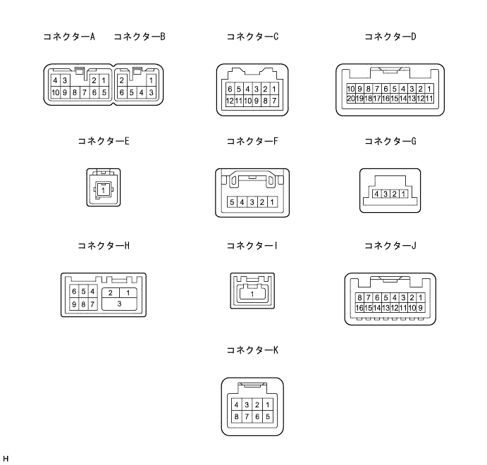

Hands-free System Terminals of ECU |

| Terminal No. (Terminal Symbol) | Input/Output | Item | Measurement Condition | Specified Condition | Trouble symptom if out of standard O: When open circuit S: When shorted to body |
|---|---|---|---|---|---|
| D3(SNS2) ←→ A7(E) | - | Resistance | Always | Below 1 Ω |
|
| D4(MIC+) ←→ D13(MIC-) | Input | Waveform | During voice input | A waveform synchronized with the sound is output |
|
| D5(MACC) ←→ A7(E) | Output | Voltage | ACC ON | 4 to 6V |
|
| D6(SWG) ←→ A7(E) | - | Resistance | Always | Below 1 Ω |
|
| D8(SW2) ←→ A7(E) | Input | Voltage | No switch pressed → voice recognition switch pressed → off-hook switch pressed → on-hook switch pressed → MODE switch pressed | 2.7 V or higher → Approx. 2.3 V → Approx. 1.6 V → Approx. 1.0 V → 0.8 V or less | Voice recognition, on-hook, off-hook and MODE operations cannot be performed with steering pad switch |
| D13 (MIC-) ←→ Body ground | - | Resistance | Always | Below 1 Ω |
|
| D14 (SGND) ←→ Body ground | - | Resistance | Always | Below 1 Ω |
|